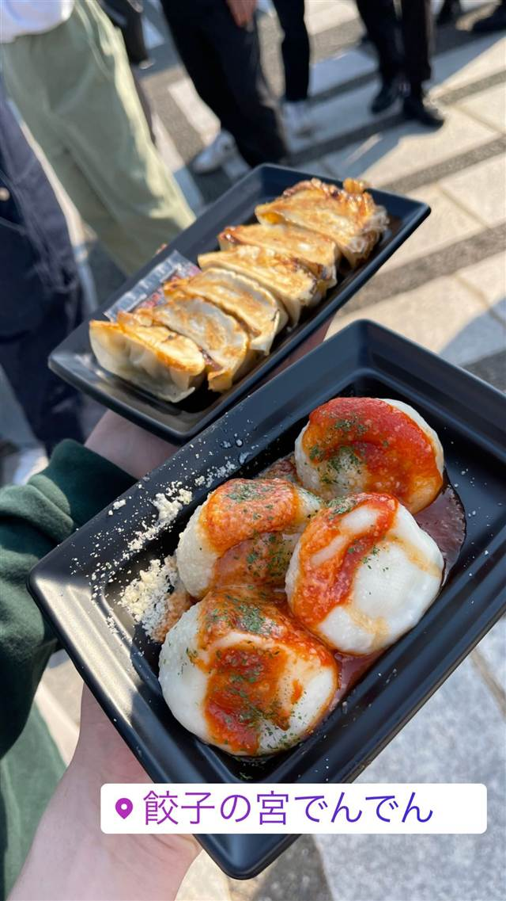

町中華 · 餃子専門 · 与野
餃子の宮でんでん 本店
川越産の小江戸黒豚を使った脂に甘みのある餃子
餃子の宮でんでん
宇都宮育ちの代表が2014年に埼玉で立ち上げた餃子専門店。「埼玉で誇れるものを」という思いから始まり、川越産の飼料で育てた小江戸黒豚を使った餃子が名物で、海外にも店舗を展開している。
TRIVIA
豆知識
- 「埼玉のイメージを餃子で変えたい」という思いから創業した会社
- ニューヨークにも出店している
REVIEWS
世間の評判
3.13食べログ
野菜たっぷりの水餃子と炒飯
- 野菜たっぷりでシャキシャキ感のある水餃子を評価する声が多い
- 無添加で優しい味付けの肉餃子を評価する声がある
- 炒飯も外さない美味しさだという声もある
食べログ・Retty
| 創業 | 2014年2月創業（株式会社でんでん設立） |
|---|---|
| 看板 | でんでん餃子、男前餃子、水餃子など各種餃子、焼き小籠包 |
| こだわり | 川越産のさつまいもやパンくず、牛乳などを飼料に育てた「小江戸黒豚」を使用し、脂に甘みがある |
| どこから | 東京から1時間ほど |
| 予算 | 昼 ～¥999 夜 ～¥999 |
| 定休日 | 月曜 |
| 場所 | 南与野 埼玉県さいたま市中央区上峰1-1-3 |
食べたもの：餃子(フェス)
NEARBY
近い店・同じ系統の店
-
 餃子専門 亀戸駅
亀戸餃子 本店
座ると自動で2皿確定、1955年創業の下町餃子専門店
昼 ～¥999 夜 ～¥999
餃子専門 亀戸駅
亀戸餃子 本店
座ると自動で2皿確定、1955年創業の下町餃子専門店
昼 ～¥999 夜 ～¥999
-
 餃子専門 幡ヶ谷
您好（ニイハオ）
ひき肉でなく粗く刻んだ肉を使う、連続ビブグルマンの餃子
昼 ¥2,000～¥2,999 夜 ¥2,000～¥2,999
餃子専門 幡ヶ谷
您好（ニイハオ）
ひき肉でなく粗く刻んだ肉を使う、連続ビブグルマンの餃子
昼 ¥2,000～¥2,999 夜 ¥2,000～¥2,999
-
 餃子専門 乃木坂
赤坂珉珉（みんみん）
酢コショウで食べる元祖、渋谷の名店直系ののれん分け店
夜 ¥4,000～¥4,999
餃子専門 乃木坂
赤坂珉珉（みんみん）
酢コショウで食べる元祖、渋谷の名店直系ののれん分け店
夜 ¥4,000～¥4,999
-
 餃子専門 銀座一丁目
銀座天龍 本店
ニンニクを使わず白菜と豚肉だけで作る12cmの大判餃子を創業以来守る
昼 ¥1,000～¥1,999 夜 ¥3,000～¥3,999
餃子専門 銀座一丁目
銀座天龍 本店
ニンニクを使わず白菜と豚肉だけで作る12cmの大判餃子を創業以来守る
昼 ¥1,000～¥1,999 夜 ¥3,000～¥3,999
-
 餃子専門 飯田橋駅
餃子の店 おけ以
東京に焼き餃子を広めた老舗、羽根つき餃子は1日1300個
昼 ¥1,000～¥1,999 夜 ¥1,000～¥1,999
餃子専門 飯田橋駅
餃子の店 おけ以
東京に焼き餃子を広めた老舗、羽根つき餃子は1日1300個
昼 ¥1,000～¥1,999 夜 ¥1,000～¥1,999
-
 餃子専門 恵比寿駅
えびすの安兵衛
高知の屋台仕込み、にんにくの効いたジューシーな餃子
夜 ¥1,000～¥1,999
餃子専門 恵比寿駅
えびすの安兵衛
高知の屋台仕込み、にんにくの効いたジューシーな餃子
夜 ¥1,000～¥1,999